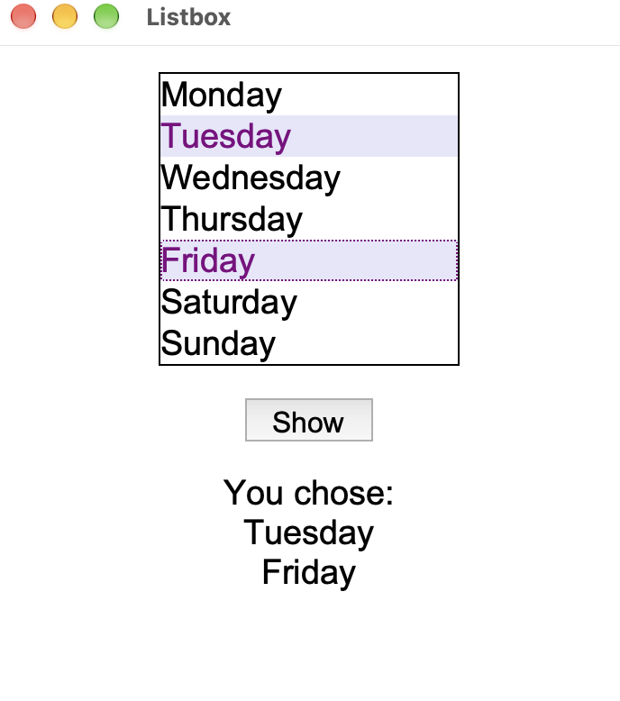
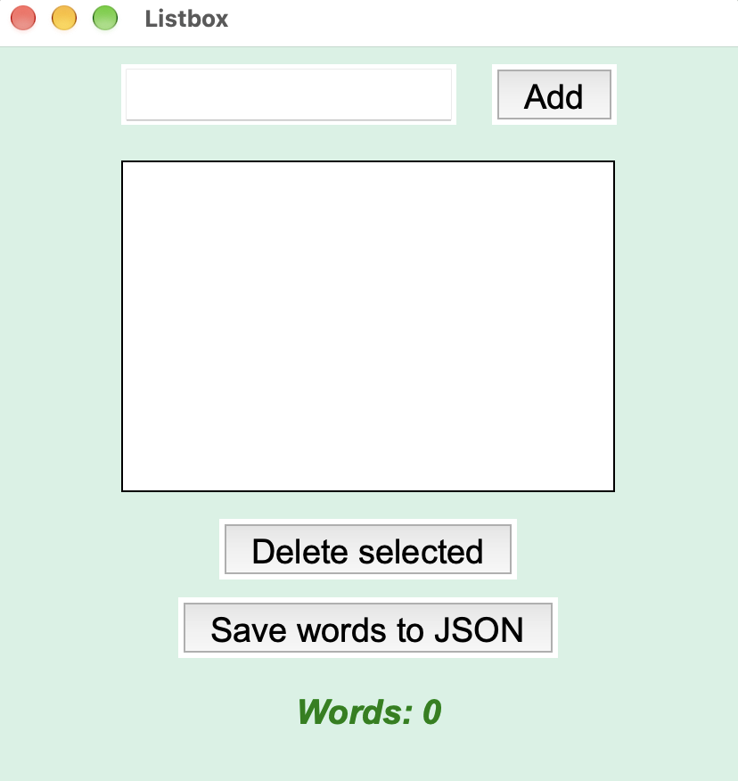
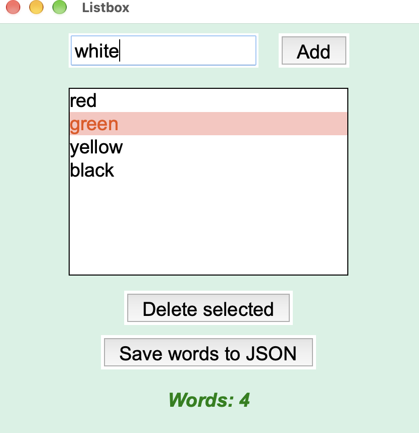
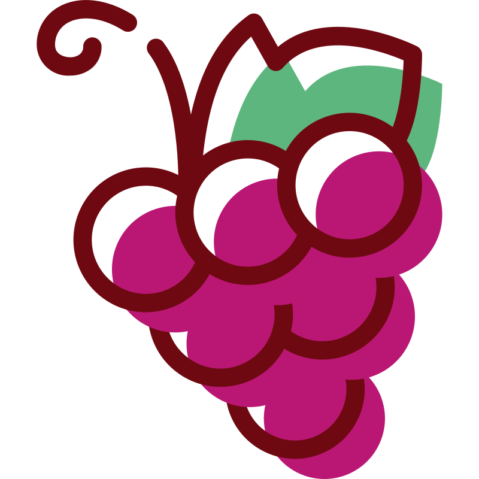

Повторення: віджети Tkinter
Повторення: віджети Tkinter
1. Label та Button: знайди помилки
У цьому коді є дві помилки. Спочатку прочитай код і дай відповіді на питання, а потім виправ помилки прямо в редакторі та перевір результат:
- Що робить рядок 8? А рядок 12?
- Запусти код. Чому текст змінився одразу, а самої кнопки у вікні немає?
- Виправ обидві помилки, щоб кнопка з'явилася і змінювала напис лише після натискання.
Очікування запуску...
2. Frame: кнопки в один рядок
- Навіщо тут потрібна рамка Frame, якщо кнопки можна було б покласти одразу у window?
- Допиши пропущені слова замість ___ і запусти код, щоб кнопки Pink та Blue стали поруч в один рядок.
Очікування запуску...
3. Entry: зчитування та очищення
- Що задають параметри width=18 у рядку 8 та pady=15 у рядку 9?
- Навіщо у рядку 12 написано .strip()?
- Допиши пропущені слова у функції greet() (рядки 12–14), щоб програма читала ім'я з поля вводу, виводила привітання в result_label і очищувала поле name_entry.
Очікування запуску...
 Список Listbox
Список Listbox
Вступ
Сьогодні ми вчимося створювати списки, з яких користувач може вибрати один (або кілька) рядків. Такі списки є скрізь: вибір країни, місяця, мови, пісні в плеєрі...
У Tkinter для цього є віджет Listbox. А щоб слова зі списку не зникали після закриття програми, ми також навчимося зберігати їх у файл за допомогою модуля filedialog.
Шаблон вікна:
from tkinter import *
window = Tk()
window.title("Listbox")
window.geometry("350x450")
# тут додаватимемо код
window.eval("tk::PlaceWindow . center")
window.mainloop()1. Створення Listbox і додавання рядків
days = Listbox(
window,
font=("Arial", 14),
height=7,
width=15,
selectmode=MULTIPLE,
selectbackground="lavender",
selectforeground="purple",
)
days.pack(pady=10)
days.insert(END, "Monday")
days.insert(END, "Tuesday")
days.insert(END, "Wednesday")- height=7 — скільки рядків видно одночасно.
- width=15 — ширина в символах.
- insert(куди, що) — додає рядок. END означає "в кінець списку".
- insert(0, "Sunday") — додасть рядок на початок списку.
- selectmode=MULTIPLE — дозволяє обирати одночасно кілька елементів зі списку. За замовчуванням можна обрати лише один елемент.
- selectbackground — задає колір фону вибраних елементів.
- selectforeground — задає колір тексту вибраних елементів.
Якщо рядків багато, додавати їх по одному незручно. Натомість можна використати цикл:
days_list = ["Monday", "Tuesday", "Wednesday", "Thursday", "Friday", "Saturday", "Sunday"]
for day in days_list:
days.insert(END, day)
Завдання 1: Місяці (частина 1)
- Створи файл months.py і налаштуй вікно за шаблоном.
- Створи список months із 12 англійських назв місяців ("January", "February", ...) і заповни ним Listbox за допомогою циклу for. Параметр selectmode=MULTIPLE тут не потрібен (будемо обирати один місяць).
2. Що вибрав користувач: curselection() та get()
Щоб дізнатися, що обрав користувач зі списку, потрібно використати такі два методи:
- .curselection() — повертає індекси усіх вибраних рядків (у вигляді кортежу/tuple).
- .get(індекс) — повертає текст рядка за його індексом.
def show_day():
selected = days.curselection() # наприклад, (2,)
if len(selected) == 0: # якщо не вибрано нічого
result_label.config(text="Choose a day!")
else:
index = selected[0] # 2
day = days.get(index) # "Wednesday"
result_label.config(text=f"You chose: {day}")
btn = Button(window, text="Show", command=show_day, font=("Arial", 12))
btn.pack()
result_label = Label(window, text="...", font=("Arial", 14))
result_label.pack(pady=10)Індекси починаються з 0. Перший рядок має індекс 0, другий — 1 і так далі. Якщо нічого не вибрано, curselection() поверне порожній кортеж (). Тоді selected[0] дасть помилку IndexError: tuple index out of range. Тому спочатку завжди перевіряємо, що щось вибрано: len(selected) > 0.
У прикладі вище функція виводить лише перший обраний елемент. Ось як можна вивести всі:
def show_day():
selected = days.curselection() # наприклад, (2, 3)
if len(selected) == 0:
result_label.config(text="Choose a day!")
else:
result_text = ""
for index in selected:
day = days.get(index)
result_text += day + "\n"
result_label.config(text=f"You chose:\n{result_text}")
Завдання 2: Місяці (частина 2)
- Додай кнопку "Show" і порожній Label для результату.
-
Напиши функцію для кнопки:
- якщо нічого не вибрано — виведи "Choose a month!";
- інакше виведи повідомлення у форматі: "You chose: March (month number 3)".
Завдання 3: Словник (частина 1)
Напишемо програму для створення і збереження списку англійських слів (поки що без перекладів).
Для початку створи новий файл, налаштуй головне вікно програми і додай усі необхідні віджети (Frame, Entry, Button, Listbox, Label). На цьому етапі список має бути порожній, а кнопки ще нічого не роблять (не мають параметра command).

Кольори можеш обрати які хочеш. У прикладі для фону використано #D5F2E4.
3. Видалення та інші корисні методи
| Команда | Що робить |
|---|---|
| .insert(END, "text") | додає рядок у кінець списку |
| .delete(index) | видаляє один рядок за індексом |
| .delete(0, END) | видаляє всі рядки (очищає список) |
| .size() | повертає кількість рядків |
| .get(0, END) | повертає кортеж з усіма рядками |
Видалення вибраного рядка:
days.delete(index)Кількість рядків:
print(days.size())Чи є рядок у списку:
if "Monday" in days.get(0, END):
print("Already in the list!")Завдання 4: Словник (частина 2)
Як має працювати кнопка Add:
- бере текст із Entry;
- прибирає зайві пробіли;
- якщо введено слово (не ""), додає його до Listbox;
- очищає поле вводу (entry.delete(0, END));
- оновлює лічильник слів на екрані (наприклад, "Words: 1");
- якщо слово вже є у списку, другий раз воно не додається.
Як має працювати кнопка Delete selected:
- якщо вибране якесь слово, видаляє його зі списку;
- оновлює лічильник слів на екрані.


filedialogЗбереження у файл
Слова, які зникають після закриття програми, не дуже корисні. Щоб їх зберігати, потрібно дві речі: місце і назва для файлу (їх обирає користувач) і запис даних у файл.
Вікно для вибору місця й назви файлу вміє показувати модуль filedialog. Його потрібно імпортувати окремо, бо рядок from tkinter import * його не підключає:
from tkinter import *
from tkinter import filedialogФункція asksaveasfilename() відкриває вікно "Зберегти як..." і повертає шлях до файлу, який обрав користувач:
filepath = filedialog.asksaveasfilename(
defaultextension=".json",
filetypes=[("JSON files", "*.json"), ("All files", "*.*")],
)
print(filepath) # наприклад, C:/Users/Anna/Documents/words.json- defaultextension: додає закінчення .json до назви файлу, якщо користувач сам його не написав.
- filetypes: список типів файлів у вікні. Кожен тип — це пара (опис, шаблон).
Якщо користувач закрив вікно або натиснув Cancel, функція поверне порожній рядок "". Тому перед записом даних у файл треба перевірити, що шлях до файлу не порожній.
Як зберегти дані у JSON-файл:
import json
if filepath:
with open(filepath, "w", encoding="utf-8") as file:
json.dump(content, file, ensure_ascii=False, indent=2)Тут "w" означає запис у файл, encoding="utf-8" та ensure_ascii=False потрібні, щоб українські літери збереглися читабельно, а indent=2 робить красиві відступи у файлі. Блок with сам закриє файл після запису.
Як зупинити функцію, якщо немає що зберігати:
def save():
# ...
if not content:
# тут можна змінити текст у Label
return
# далі пишемо код без elseЗавдання 5: Словник (частина 3)
Напиши функцію для збереження списку слів у файл (для кнопки Save words to JSON).
Спершу потрібно отримати всі слова з Listbox за допомогою .get(0, END). Цей метод повертає кортеж, тому для зручності перетворимо його на звичайний список через list(...).
Далі використай filedialog для збереження списку слів у JSON-файл (якщо список не порожній).